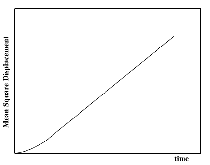

The Mean Square Displacement
The Mean Square Displacement
Molecules in liquids and gases do not stay in the same place, but move about constantly. It is in fact essential that they do so, otherwise they would not possess the property of fluidity. The phenomenon is apparent if you place a drop of ink into water - after a while the colour is evenly distributed through the liquid. It is obvious that the molecules of the ink have moved through the bulk of the water. This process is called diffusion and it happens quite naturally in fluids at equilibrium. (The water molecules themselves are also undergoing diffusion, though this is not so obvious.)
The motion of an individual molecule in a dense fluid does not follow a simple path. As it travels, the molecule is jostled by collisions with other molecules which prevent it from following a straight line. If the path is examined in close detail, it will be seen to be a good approximation to a random walk. Mathematically, a random walk is a series of steps, one after another, where each step is taken in a completely random direction from the one before. This kind of path was famously analysed by Albert Einstein in a study of Brownian motion and he showed that the mean square of the distance travelled by particle following a random walk is proportional to the time elapsed. This relationship can be written as:
<r2> = 6 D t + C
where <r2> is the mean square distance and t is time. D and C are constants. The constant D is the most important of these and defines the diffusion rate. It is called the diffusion coefficient.
What is the mean square distance and why is it significant?
Imagine a single particle undertaking a random walk. For simplicity assume this is a walk in one dimension (along a straight line). Each consecutive step may be either forward or back, we cannot predict which, though we can say we are equally likely to step forward as to step back. (A drunk man comes to mind!) From a given starting position, what distance are we likely to travel after many steps? This can be determined simply by adding together the steps, taking into account the fact that steps backwards subtract from the total, while steps forward add to the total. Since both forward and backward steps are equally probable, we come to the surprising conclusion that the probable distance travelled sums up to zero! This is clearly a useless property to calculate (though it is perhaps a warning to drunkards).
If however, instead of adding the distance of each step we added the square of the distance, we realise that we will always be adding positive quantities to the total. In this case the sum will be some positive number, which grows larger with every step. This obviously gives a better idea about the distance (squared in this case) that a particle moves. If we assume each step happens at regular time intervals, we can easily see how the square distance grows with time, and Einstein showed that it grows linearly with time.
In a molecular system a molecule moves in three dimensions, but the same principle applies. Also, since we have many molecules to consider we can calculate a square displacement for all of them. The average square distance, taken over all molecules, gives us the mean square displacement. This is what makes the mean square displacement (or MSD for short) significant in science: through its relation to diffusion it is a measurable quantity, one which relates directly to the underlying motion of the molecules.
In molecular dynamics the MSD is easily calculated by adding the squares of the distance. Typical results (for a liquid) resemble the following plot:

The linear (i.e. straight line) dependence of the MSD plot is apparent. If the slope of this plot is taken, the diffusion coefficient D may be readily obtained.
At very short times however, the plot is not linear. This is because the the path a molecule takes will be an approximate straight line until it collides with its neighbour. Only when it starts the collision process will its path start to resemble a random walk. Until it makes that first collision, we may say it moves with approximately constant velocity, which means the distance it travels is proportional to time, and its MSD is therefore proportional to the time squared. Thus at very short time, the MSD resembles a parabola. This is of course a simplification - the collision between molecules is not like the collision between two pebbles, it is not instantaneous in space or time, but is `spread out' a little in both. This means that the behaviour of the MSD at short time is sometimes more complicated than this MSD plot shows.